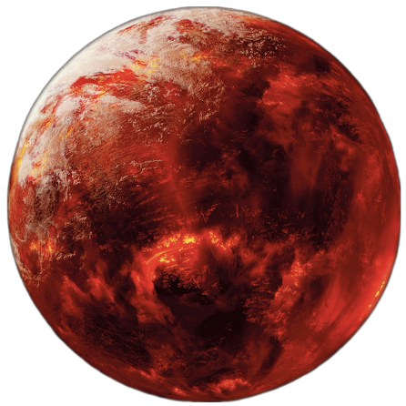
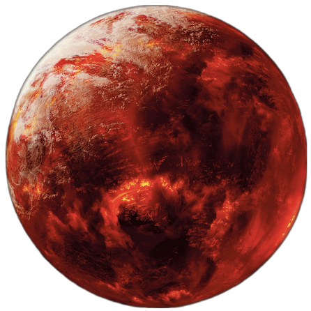

Star Wars
Episode IV
UN NOUVEL ESPOIR
C'est une époque de guerre civile. A bord de vaisseaux spatiaux opérant à partir d'une base cachée, les Rebelles ont emporté leur première victoire sur le maléfique Empire Galactique. Au cours de la bataille, des espions rebelles ont réussi à dérober les plans secrets de l'arme absolue de l'Empire : l'Etoile de la Mort, une station spatiale blindée dotée d'un équipement assez puissant pour annihiler une planète tout entière. Poursuivie par des sbires sinistres de l'Empire, la princesse Leia file vers sa base dans son vaisseau cosmique, porteuse des plans volés à l'ennemi qui pourront sauver son peuple et restaurer la liberté dans la galaxie....
 
